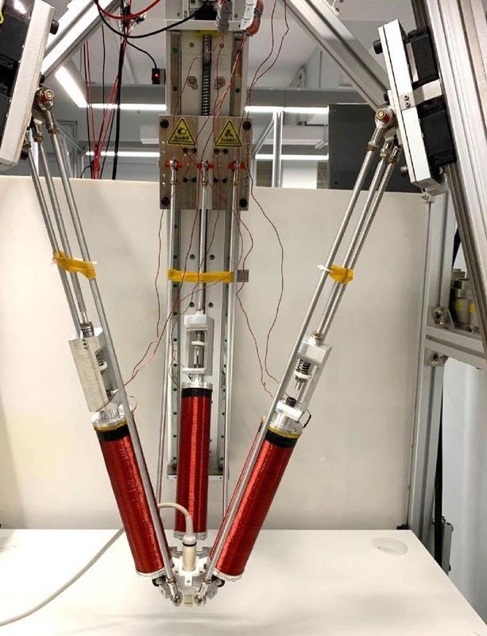

Magnetic navigation · cuhkmobileem_yang2021
Mobile coils + US
Three-electromagnet parallel mechanism with US probe for guidewire steering

1 / 5


- Family
- Magnetic navigation (magnetic-navigation)
- Devices
- own replica-moulded guidewire: 50 um nitinol wire, PDMS cannula 1 mm OD, NdFeB magnet 1.2 mm OD x 2 mm at tip
- Degrees of freedom
- parallel mechanism of three electromagnets and US probe; 1-axis motorised feeder (1-15 mm/s, devices 0.5-5 mm)
- Push
- Magnetic
- Twist
- Field direction
- Tested up to
- Phantom
- Sim-to-real
- None found — No simulation-trained controller found for this robot.
Testing
- Highest level
- Phantom
- What was tested
- three paths x three trials, tip reached target in all trials
- Key numbers
- 30 mT per electromagnet at 100 mm, 12 mT omnidirectional at 100 mm; mean tip error 1.79 mm; speed 3.08 mm/s; kinematic modelling error 0.89 mm; field kept at 5 mT during run
Mechanism
- Push (translation)
- magnetic (steering) + motorised feeder
- Twist (rotation)
- field direction
- Device range
- N.R.
- Target anatomy
- abdominal/peripheral phantom (bifurcated 5 mm ID silicone channel)
Sensing and interface
- Force sensing
- none
- Leader and haptics
- no
- Imaging
- B-mode US at 22 Hz for tracking (radiation-free)
- Sterility
- N.R.
Size
- Footprint (mm)
- cylindrical workspace 500 mm diameter
- Mass (kg)
- N.R.
Simulation
- Simulation model
- constant-curvature kinematic model with corrective angle (full)
- Sim-trained controller
- none found
Versions
- Lineage
- single (RA-L 2021)
Sources
- Magnetic Control of a Steerable Guidewire Under Ultrasound Guidance Using Mobile Electromagnets · IEEE Robotics and Automation Letters, 2021 · doi:10.1109/lra.2021.3057295 [yang2021_magnetic]
Notes
- Notes
- Crop clips panel (b) at its right edge.
This record
- Read level
- full
- Picture
- yang2021_magnetic Fig. 8(b) (parallel mechanism with three electromagnets) ↗ — licence: publisher copyright (IEEE); grade B
- Picture changes
- native extract, crop
- Found by
- actuated-tip: Search of actuated-tip and magnetic devices.
- Data
- JSON · YAML:
records/robots/cuhkmobileem_yang2021.yaml - Correction
- Suggest a correction [repository not created yet]